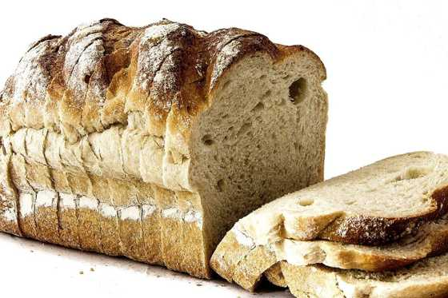
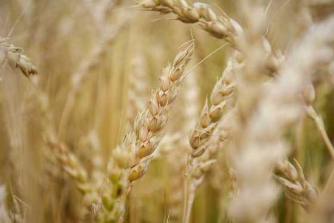
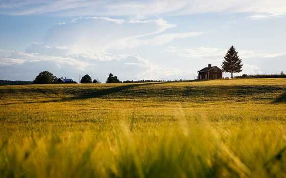
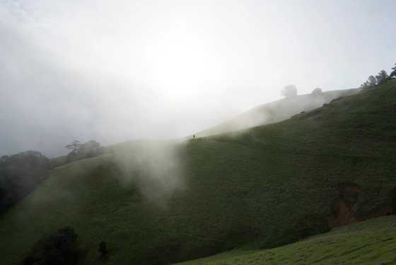
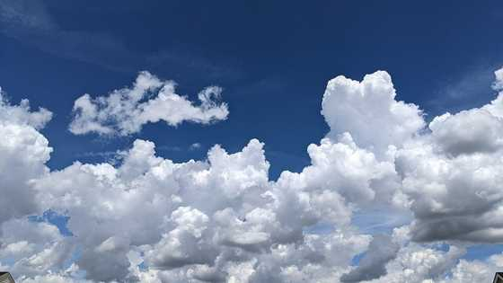
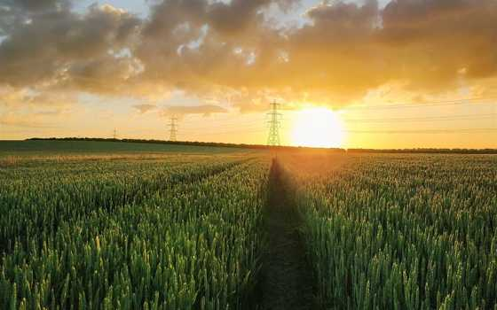
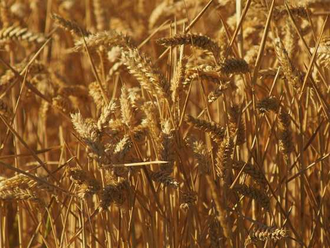
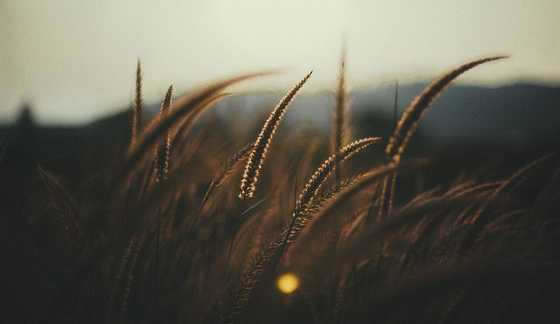

山梨県都留市上谷のパン屋
混ぜものの少ない、
素朴なパンを一軒家から。
パンの松花軒は、1988年12月から続く一軒家のパン屋です。飾らない味を、毎日のテーブルへ。
お店のこと
1988年から、上谷の一軒家で。
パンの松花軒は、山梨県都留市上谷にあるパン屋です。掲載情報によると開業は1988年12月で、一軒家のお店に駐車場があり、都留文科大学前駅から歩ける距離にあります。
口コミでは「無添加のパン」と紹介されることが多く、MIX粉を使わず、油脂は無添加のマーガリンと米油、あんやカスタードは自家製といった声があります(いずれも口コミ情報で、お店の公式な説明ではありません)。
店名「松花軒」の由来や、店主さんの想いは確認できませんでした。制作側のイメージとして、このページは「素朴・昔ながら・混ぜものの少なさ」を軸に、麦と土の色でまとめています。




口コミ
こんなお声が届きそうです。
イメージ例あんこの量にびっくり。甘さは控えめで、ぺろりと食べられました。
イメージ例素朴な味わいで、毎日食べても飽きません。散歩ついでに寄りたくなる一軒家です。
イメージ例ブールを買って帰り、夜はスープと一緒に。噛むほどに麦の香りがします。
上記は制作側が作成したイメージ例で、実在のお客様の声ではありません。



写真クレジット(すべてフリー素材・加工あり)
- bread.jpg: FranHogan / CC BY-SA 4.0
- bread-closeup.jpg: Nleamy / CC BY 2.5
- baguettes.jpg: jules (stonesoup) / CC BY 2.0
- sunrise-wheat.jpg: sagesolar / CC BY 2.0
- wheat-field-b.jpg: Jazzmaster1997 / CC BY 4.0
- sky-cumulus.jpg: Lance Vanlewen / CC BY-SA 4.0
- wheat-ears.jpg: Daniela M. / CC BY-SA 4.0
- wheat-twist.jpg: Jberkel / CC0
- wheat-closeup.jpg, misty-hills.jpg: 作者不明 / CC0
- wheat-field-a.jpg: Arno Smit / CC0
- barley.jpg: Hanna Bergblau / CC0
- wheat-dusk.jpg: Cezanne Ali / CC0
- toast.jpg: Daderot / CC0
- brownie.jpg: Syced / CC0